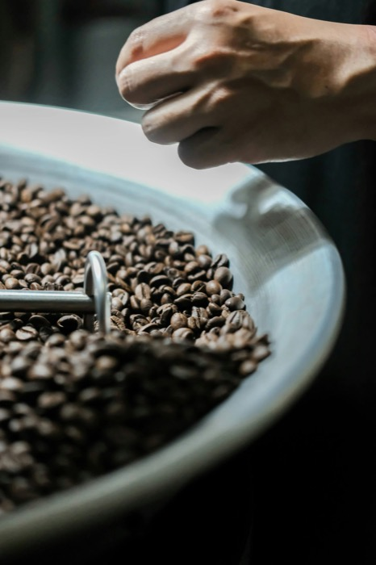
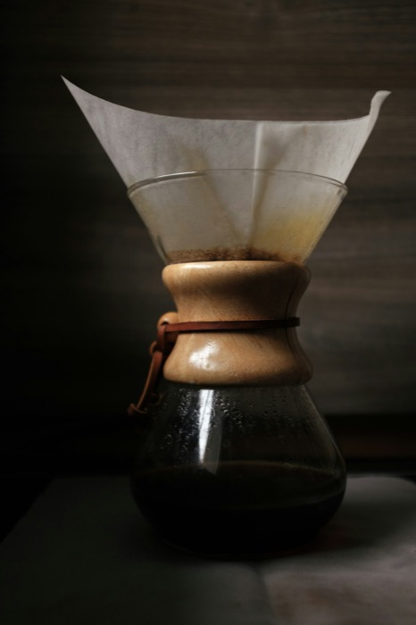

Harbor Light
Citrus, honey and jasmine. Bright and clean, built for slow pour-overs.
Ask about this roast for Harbor LightSmall-batch coffee roasters
Single-origin beans, roasted twice a week on the coast and shipped within a day. Coffee that tastes like it was made this morning, because it was.

This week's roasts
Each lot is roasted to order and dated on the bag, so you always know how fresh it is.
Citrus, honey and jasmine. Bright and clean, built for slow pour-overs.
Ask about this roast for Harbor LightHazelnut, caramel and baked apple. Balanced and easy, our everyday coffee.
Ask about this roast for DriftwoodDark chocolate, toasted almond and molasses. Smooth and deep for espresso and milk.
Ask about this roast for Night Tide
From bean to door
Small farms we know by name, bought at fair prices in traceable lots.
Twice a week in small batches, profiled by hand and cupped before it ships.
Out the door within a day, with a brewing guide and the roast date on the bag.
From the journal
Brewing
A simple, repeatable pour-over recipe: the ratio, grind, water temperature and pour timing that turn good beans into a great cup, with no special gear.
Roasting
What really changes between light, medium and dark roasts: flavor, acidity, body and caffeine, and how to choose the right roast for the way you brew.
Sourcing
How our buyer picks farms and lots: the cupping scores, relationships and traceability that decide which coffees make it into a Tidewell bag.
Come say hello
Skip, pause or cancel any time.